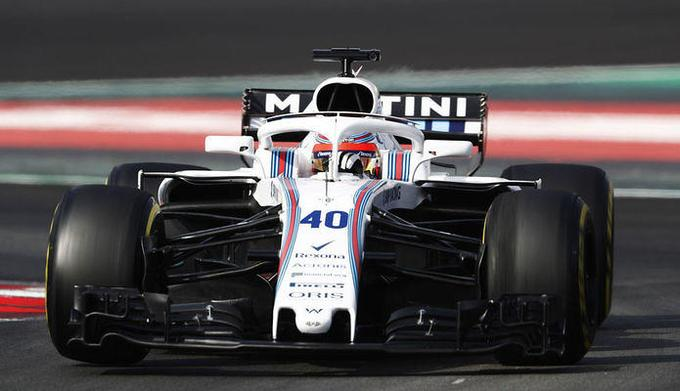

 2017: Testy w World Endurance Championship, GP3, Formule E i Formule 1
{kind=link}
W 2017 roku Robert Kubica wyraził chęć powrotu do regularnych startów w wyścigach. Początkowo miał być kierowcą zespołu ByKolles, który rywalizuje w serii World Endurance Championship w klasie LMP1. Zrezygnował jednak ze startów w tej serii. 19 kwietnia 2017 przejechał ponad 70 okrążeń za kierownicą bolidu GP3 zespołu Trident. 2 maja 2017 na torze Donington Park, testował bolid Formuły E. 6 czerwca 2017, na torze w Walencji wziął udział w prywatnych testach bolidu Formuły 1, zorganizowanych przez zespół Renault. We wspomnianych testach, przejechał 115 okrążeń bolidem Lotus E20 z sezonu 2012. 2 lipca 2017, ponownie zasiadł za sterami bolidu Renault i wziął udział w Goodwood Festival of Speed. 12 lipca 2017, na torze Paul Ricard we Francji, przejechał blisko 100 okrążeń maszyną, którą jeździł w Walencji i na festiwalu. 14 lipca 2017, w dniu rozpoczynającym treningi na Silverstone, testował w symulatorze zespołu Red Bull Racing, model bolidu z 2017 roku. 24 lipca 2017 Renault oficjalnie potwierdziło, że Kubica, 2 sierpnia przetestuje model z sezonu 2017 – R.S.17, podczas oficjalnych testów dla kierowców na torze Hungaroring. Podczas nich przejechał 142 okrążenia i uzyskał czwarty czas podczas sesji. Na początku września Renault zdecydowało na sezon 2018 zatrudnić Carlosa Sainza. W połowie września Kubica testował w symulatorze Williamsa w Grove, zaś na początku października zespół Williams potwierdził jego testy za kierownicą samochodu z 2014 roku – Williamsem FW36 na torach: Silverstone i Hungaroring. Pierwszy z nich odbył się 11 października, a drugi 17 października. Testy zostały uznane przez brytyjski zespół za udane. O angaż w tym samym czasie starali się również: rezerwowy kierowca Williamsa Paul di Resta, wspierany przez zespół Mercedesa Pascal Wehrlein oraz rosyjski kierowca Danił Kwiat. 22 listopada, Williams potwierdził, że w dniach 28-29 listopada, Kubica weźmie udział w testach opon Pirelli, po Grand Prix Abu Zabi i zasiądzie za kierownicą najnowszego modelu FW40 z 2017. Pierwszego dnia testów na Yas Marina Circuit, we wtorek 28 listopada, spędził za kierownicą bolidu sześć godzin, podczas których przejechał 100 okrążeń, pokonując 554 km. W drugim dniu testów, w środę 29 listopada, przejechał 27 okrążeń i zajął siódmą pozycję.
2018: Kierowca rezerwowy i rozwojowy w Williamsie
16 stycznia 2018 poinformowano, że Robert Kubica zostanie rezerwowym kierowcą rozwojowym zespołu Williams. Wystąpił podczas pierwszej tury testów zimowych które odbyły się w dniach 26 lutego- 1 marca uzyskując czas w dniu 27 lutego 1:21:495, przejeżdżając 48 okrążeń, dnia następnego z powodu złych warunków pogodowych przejechał tylko okrążenie instalacyjne. Wystąpił również podczas letnich testów w Barcelonie, osiągając lepsze czasy niż obydwaj podstawowi kierowcy Williamsa.
Źródła: wikipedia.pl